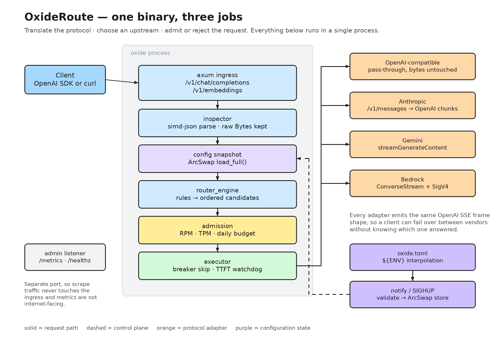

One OpenAI-compatible API in front of every model vendor
An ultra-low-latency router and gateway in a single Rust binary. It sits between your application and OpenAI, Anthropic, Google Gemini, AWS Bedrock, vLLM or Ollama — choosing the upstream, surviving its failures, translating its wire format, and enforcing per-tenant limits, all without the client noticing.
▶ Watch the demo — recorded against a live process, under two minutes.
How the pieces fit

What happens to a request
Inspected, not copied
One simd-json pass reads the model, stream flag, prompt
size and complexity. The original bytes are forwarded verbatim.
Resolved against a snapshot
Rules and models are evaluated on an ArcSwap snapshot, so a
reload can never split one request across two configs.
Admitted or rejected
Requests per minute, tokens per minute and a daily USD budget are checked per tenant — cheapest gate first.
Tried against a plan
The result is an ordered, de-duplicated candidate list: primary, strategy targets, then fallbacks.
Guarded before the first byte
No 200 OK reaches the client until an upstream produces a
real content frame — not just headers.
Relayed in OpenAI shape
Whatever the vendor speaks, the client sees the same chunk sequence and
a final [DONE].
Capabilities
Declarative routing
Virtual models over weighted targets, with three strategies.
priority— primary, then a fixed chainweighted_random— sample by weightlatency_ewma— fastest healthy target first
Failover that clients cannot see
A provider that returns 200 and then goes silent is abandoned
at its first-token deadline, and the next candidate takes over before any
header was committed.
- Post-header stalls are caught too
- Tripped breakers are skipped for free
- Every failure is logged in the error body
Protocol translation
Anthropic, Gemini and Bedrock events are parsed and re-rendered as OpenAI chunks; OpenAI-compatible upstreams are a true pass-through.
- Survives arbitrary chunk and UTF-8 boundaries
- Stop reasons mapped to OpenAI's vocabulary
Admission control
Three independent ceilings per tenant, each with its own rejection reason on the metrics endpoint.
- GCRA for request rate
- Cost-weighted bucket for tokens
- Micro-USD budget, checked before dispatch
Zero-downtime reload
Editing the file or sending SIGHUP rebuilds providers, then
swaps the config in one atomic store. In-flight streams finish on the
config they started with.
- Invalid files are rejected; the old config keeps serving
SIGTERMdrains, then exits at a hard deadline
Observability that answers questions
Eight Prometheus families on a separate admin listener, plus OTLP traces and PII-redacted logs.
- Was this
429ours or the vendor's? - Which upstreams are ejected right now?
- How many streams are in flight?
Running it
# build once; it is a single binary cargo build --release ./target/release/oxide init --output oxide.toml ./target/release/oxide validate --config oxide.toml ./target/release/oxide serve --config oxide.toml # where would this prompt actually go? (no upstream is called) ./target/release/oxide dry-run --config oxide.toml \ --model auto --prompt "Summarise this contract"
The client only needs a new base URL. Model names, streaming, and error shapes stay OpenAI-shaped.
Deliberate limits
Not implemented today
- No ingress authentication. Tenant identity is the
client-supplied
X-Tenant-ID, so limits bind only behind a trusted front end. - Response cache is accepted in config but not wired.
- Error-rate breaker knobs are inert; only consecutive failures trip a breaker.
- Streaming usage is billed on the prompt estimate — streams carry no usage block.
OxideRoute v0.1.0 · Rust · OpenAI-compatible ingress at
/v1/chat/completions and /v1/embeddings.